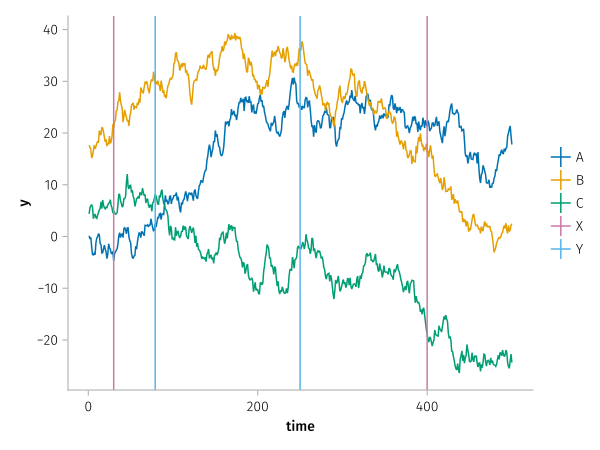
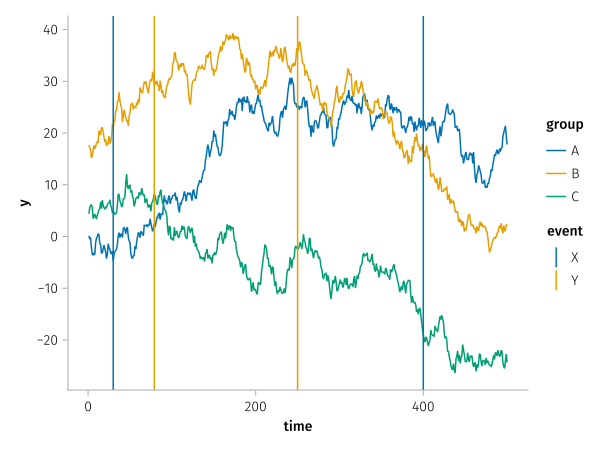
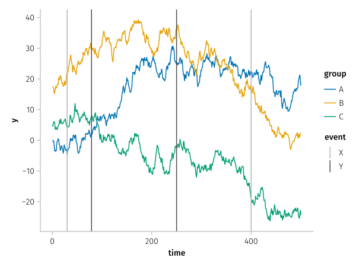
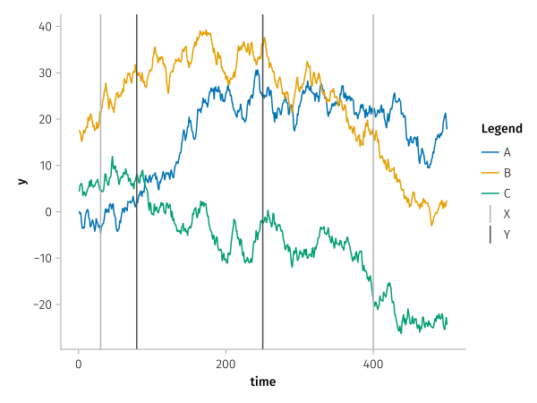

Secondary scales

using AlgebraOfGraphics, CairoMakieBy default, scales with the same aesthetic type have their categories merged. This can be undesirable if there are disjoint sets of categories, for example three different time series with two different event markers:
nevents = 500
ngroups = 3
time = repeat(1:nevents, ngroups)
y = reduce(vcat, [cumsum(randn(length(time))) for _ in 1:ngroups])
group = repeat(["A", "B", "C"], inner = nevents)
df1 = (; time, y, group)
df2 = (; time = [30, 79, 250, 400], event = ["X", "Y", "Y", "X"])
spec_a = data(df1) * mapping(:time, :y, color = :group) * visual(Lines)
spec_b = data(df2) * mapping(:time, color = :event) * visual(VLines)
draw(spec_a + spec_b)
By assigning an arbitrary scale identifier to one of the color mappings, we can split the two scales apart and receive a separate legend for both:
split_spec = spec_a + spec_b * mapping(color = :event => scale(:secondary))
draw(split_spec)
Each scale can then be modified separately in the scales configuration. For example, it is not desired that both scales use the same color palette:
fg = draw(split_spec, scales(secondary = (;
palette = [:gray70, :gray30]
)))
If you don't want to have separate legend groups, you can merge them using the order keyword in the legend config.
draw(
split_spec,
scales(
secondary = (; palette = [:gray70, :gray30])
);
legend = (; order = [[:Color, :secondary] => "Legend"])
)
This page was generated using DemoCards.jl and Literate.jl.